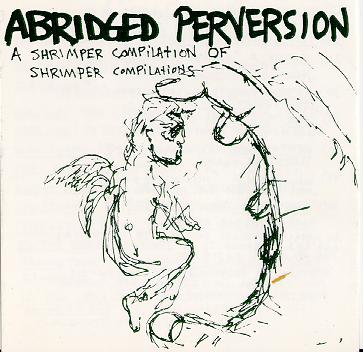

abridged perversion

title: abridged perversion
format: cd
songs:
colonial awards of 1984
the extra glenns - badger song
the bux - holiday
nothing painted blue - big pink heart
sentridoh - certain dance - cirsumstance
goosewind - manny's mote
shoeface - future shock
will simmons - 50 miles
insect feelings - zisk
the Mountain Goats - the window song
junket - tiresome
massengil - premature cheese
joey burns (creamy original) - do it all the time
wckr spgt - fluffy cat
punk rock - happiness is...
diskothi-q - pork chop
frnaklin bruno - clean needle
halo - fever pitch
paste - h i p s
primordial undermind - delerium insomniacal
guffey - creepy
refrigerator - map to the stars
simon wickham smith w/ bill + karl
john davis - i had a dream i was down by the ocean
ah bus - fisherman's friend
buzzsaw - dir rote luft
bugskull - you don't know
the jim bishop guitar army
carne-a - canker town
satnam puppets - guitar in room pit
jive - old family box
party of one - throw away
lil' johnny h - incomplete #1
lou barlow - revolution #37
please mail any questions/comments/complaints, or just notes hello to:nall@themountaingoats.net